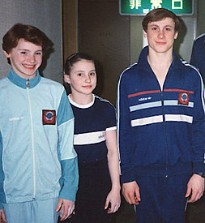

Gennady Zadorozhny (USSR)
1988 Kraft International AA Champion

Zadorozhny, Gurova and
Shevchenko (R-L)
at the 1987 World Sports Fair.
Competition Results
1987
Riga International: 1st AA
USSR Championships: 3rd AA
USSR Cup: 2nd V
World Sports Fair: 8th AA, 1st R, 2nd PB
1988
Kraft International: 1st AA
USSR Cup: 16th AA
World Sports Fair: 12th AA, 1st FX, 1st R, 1st PB
1989
USA-USSR Dual Meet: 1st Team, 3rd AA
USSR Cup: 7th AA
This page was created on November
19, 2005.
© Gymn Forum